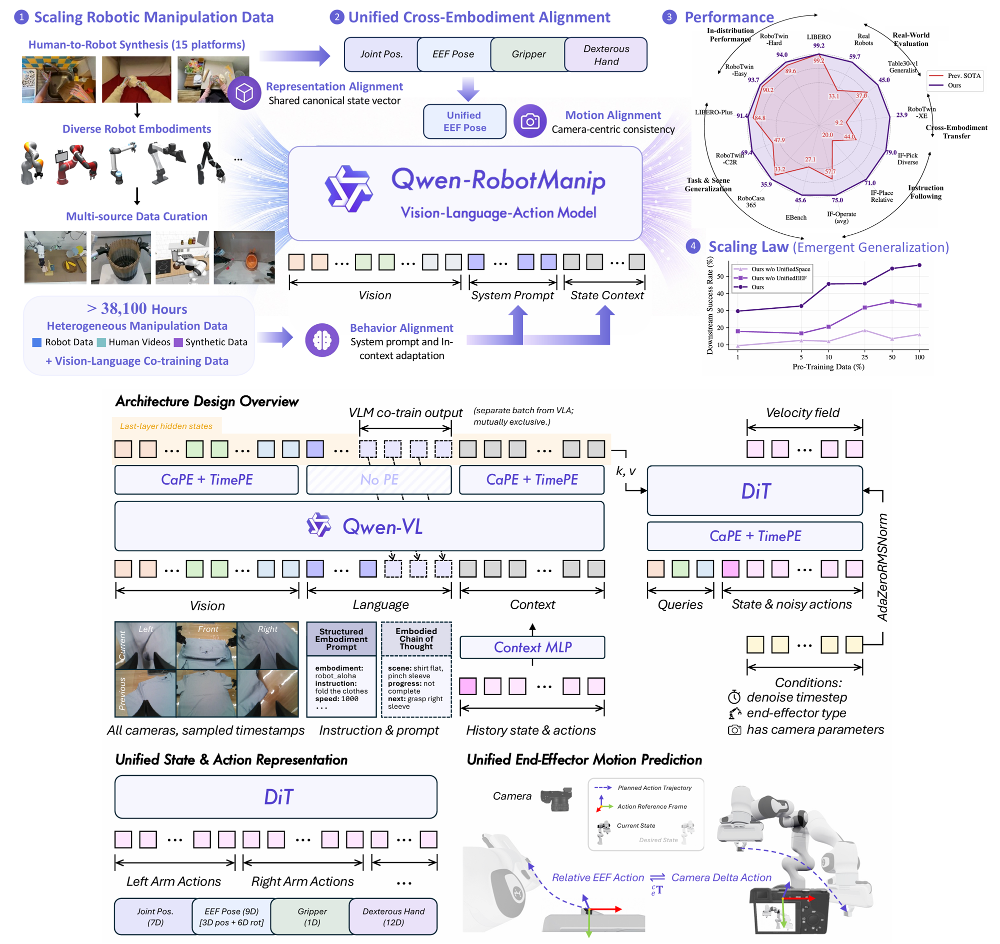

About Me
I received my Ph.D. from Peking University in 2026, advised by Prof. Zongqing Lu. I received my Bachelor's degree from the Turing Class at Peking University in 2021.
My research interests lie in Embodied AI and Reinforcement Learning (RL). My current research focuses on foundation models for robotic manipulation.
I am open to collaborations and discussions.
Selected Papers

Qwen-RobotManip Technical Report: Alignment Unlocks Scale for Robotic Manipulation Foundation Models
A scalable Vision-Language-Action foundation model that aligns heterogeneous robots and substantially outperforms prior models in generalization.


{kind=link}

RL-GPT: Integrating Reinforcement Learning and Code-as-Policy
{kind=link}
An LLM agent equipped with RL for continual learning in open-world environments.

{kind=link}


Services
Conference Reviewer
ICML'22,24,25; NeurIPS'22,23,24,25; ICLR'24,25,26; AAAI'23,24,25,26; CVPR'24,26; CORL'25; IROS'25.
Teaching Assistant
Deep Reinforcement Learning, Zongqing Lu, 2023 Spring
Computational Thinking in Social Science, Xiaoming Li, 2020 Autumn
Deep Generative Models, Hao Dong, 2020 Spring